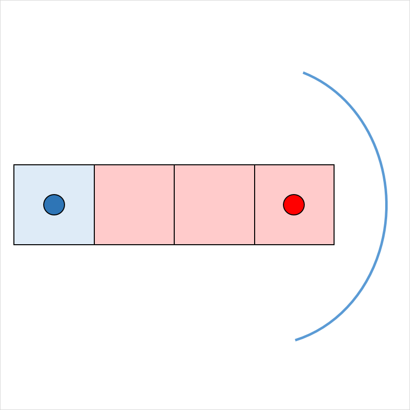
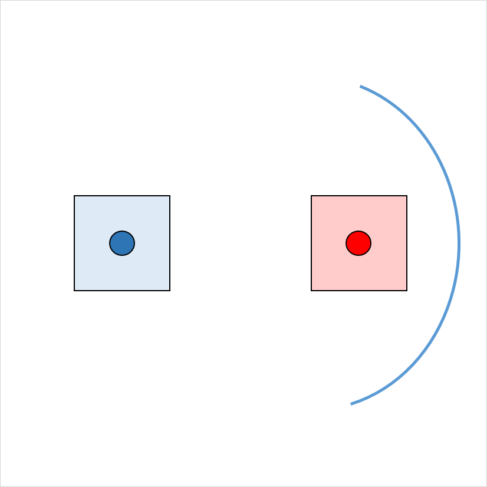
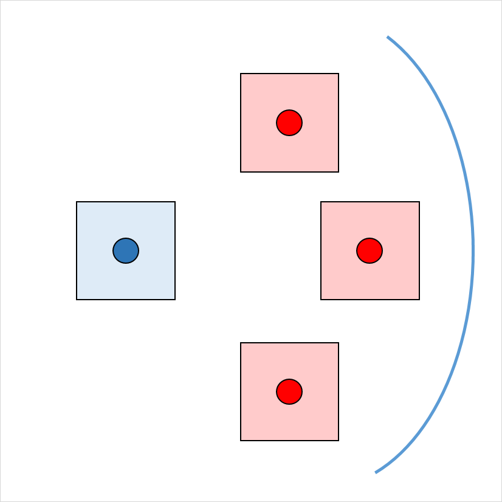
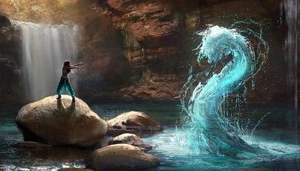
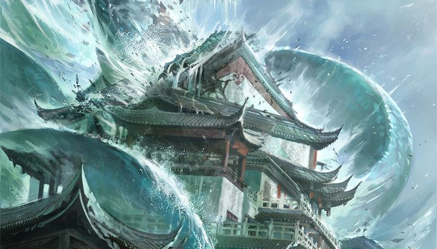
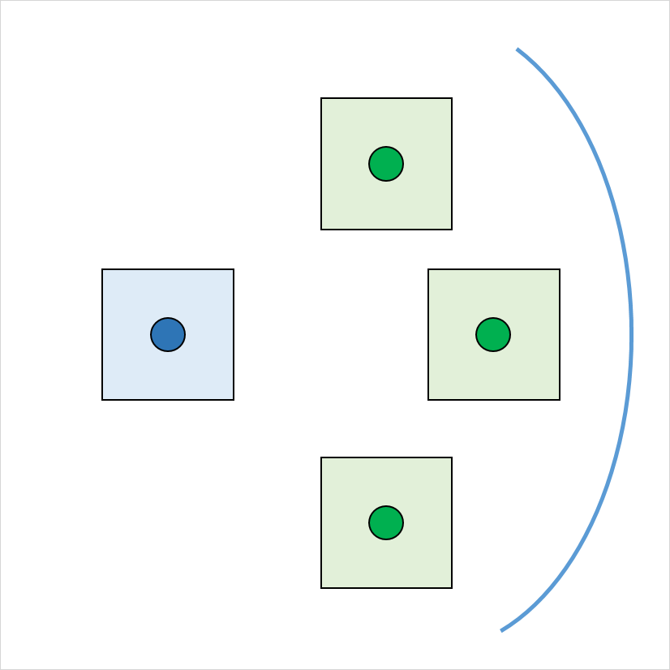
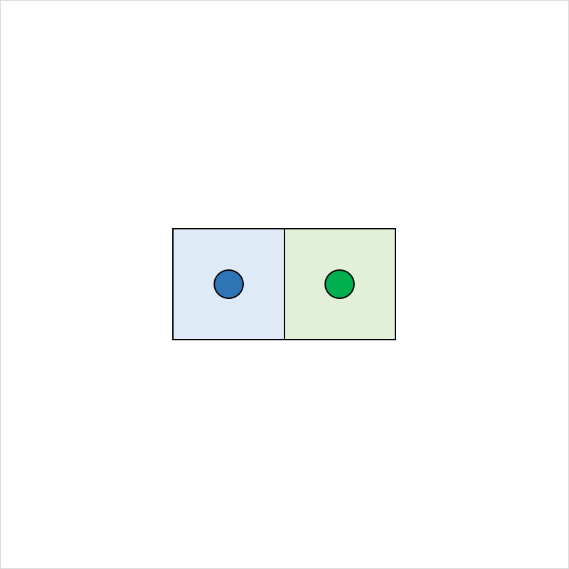

Trident des tempêtes
(Trident of Storms)

Attaque
:
+9
Dégats
:
1d6 + 5 (contondant)

Lien :
Charges :
Sorts :
vent violent (0)
éclair de sorcière (1)
création/desturction d'eau (1)
écrire dans le ciel (2)
appel à la foudre (3)
contrôle de l'eau (4)
contrôle des vents (5)
sacre du vent (6)
Ce trident chargé de la force de l'océan est un présent d'Umberlee à ses prêtres les plus fidèles.
Celui qui le porte sent un léger courant parourir l'arme, provoquant de temps en temps des petites décharges
Ce trident peut être manié comme un trident magique qui octroie un bonus de +2 à l'attaque et aux dégâts. Lorsque vous le tenez, vous obtenez un bonus de +2 aux jets d'attaque des sorts.
Le trident possède 10 charges pour les propriétés suivantes. Il récupère 1d6 + 4 charges dépensées chaque jour à l'aube. Lorsque vous dépensez la dernière charge, lancez un d20. Sur un 1, le trident perd ses propriétés et devient un simple trident non magique.
Sorts Vous pouvez utiliser une action pour dépenser une ou plusieurs des charges du trident et jeter l'un des sorts suivants depuis celui-lui, en utilisant votre DD de sauvegarde aux sorts : vent violent (à volonté) éclair de sorcière (1 charge) création/desturction d'eau (1 charge) écrire dans le ciel (2 charges) appel à la foudre (3 charges) contrôle de l'eau (4 charges) contrôle des vents (5 charges) sacre du vent (6 charges)
Tourbillon Lorsqu'il est plongé dans l'eau, celle-ci se met à tourner autour du manche. Ce troubillon aspire à lui tout ce qui se trouve à 3m de l'arme.
Celui qui le porte sent un léger courant parourir l'arme, provoquant de temps en temps des petites décharges
Ce trident peut être manié comme un trident magique qui octroie un bonus de +2 à l'attaque et aux dégâts. Lorsque vous le tenez, vous obtenez un bonus de +2 aux jets d'attaque des sorts.
Le trident possède 10 charges pour les propriétés suivantes. Il récupère 1d6 + 4 charges dépensées chaque jour à l'aube. Lorsque vous dépensez la dernière charge, lancez un d20. Sur un 1, le trident perd ses propriétés et devient un simple trident non magique.
Sorts Vous pouvez utiliser une action pour dépenser une ou plusieurs des charges du trident et jeter l'un des sorts suivants depuis celui-lui, en utilisant votre DD de sauvegarde aux sorts : vent violent (à volonté) éclair de sorcière (1 charge) création/desturction d'eau (1 charge) écrire dans le ciel (2 charges) appel à la foudre (3 charges) contrôle de l'eau (4 charges) contrôle des vents (5 charges) sacre du vent (6 charges)
Tourbillon Lorsqu'il est plongé dans l'eau, celle-ci se met à tourner autour du manche. Ce troubillon aspire à lui tout ce qui se trouve à 3m de l'arme.
Masse de lumière
(Lightbringer)
Attaque
:
+11
Dégats
:
1d8 + 8 (contondant)
Emmet de la lumière comme une torche
+1d6 (radiant) contre les morts-vivants
+1d6 (radiant) contre les morts-vivants
"Lightbringer" a été commandée par des prêtres de Lathandre, le dieu de l'aube, des mages travaillant avec les gnomes et les nains du pacte de Phandalin. La masse a été perdue lorsque la grotte de l'Echo et sa mine ont disparus de l'histoire.
Les chercheurs ont trouvé "Lightbringer" dans leurs efforts pour reconquérir la Forge des sorts dans la grotte de l'Echo.
La tête de la masse est en forme de rayon de soleil et en laiton massif. Cette arme brille comme une torche lorsque son porteur le commande. Pendant qu'elle brille, la masse inflige 1d6 dégâts radiants supplémentaires aux créatures mortes.
Lorsque Orsic est tombé, cet objet a été porté à Gundren Rockseeker dans la grotte de l'Echo.
Les chercheurs ont trouvé "Lightbringer" dans leurs efforts pour reconquérir la Forge des sorts dans la grotte de l'Echo.
La tête de la masse est en forme de rayon de soleil et en laiton massif. Cette arme brille comme une torche lorsque son porteur le commande. Pendant qu'elle brille, la masse inflige 1d6 dégâts radiants supplémentaires aux créatures mortes.
Lorsque Orsic est tombé, cet objet a été porté à Gundren Rockseeker dans la grotte de l'Echo.
Fémur de Saint Markovia
(Saint Markovia’s thighbone)
Attaque
:
+10
Dégats
:
1d8 + 7 (contondant)
+2d6 (radiant) contre les fiélons et morts-vivants
Si PV < 25 JdS(Sag) de 15
en cas d'echec : créature détruite
en cas de réussite : fuite pendant 1 tour
Emmet de la lumière vive sur 6m
Si PV < 25 JdS(Sag) de 15
en cas d'echec : créature détruite
en cas de réussite : fuite pendant 1 tour
Emmet de la lumière vive sur 6m
Le fémur de Saint Markovia a les propriétés d’une masse de perturbation. S'il frappe un ou plusieurs coups contre un vampire ou un vampire au cours d'une bataille, le fémur s'effrite une fois la bataille terminée.
Dans sa jeunesse, Markovia a suivi son cœur et est devenue prêtre du Morninglord peu après son dix-huitième anniversaire. Elle se révéla être une prosélytiste charismatique et, avant l'âge de trente ans, avait acquis la réputation de ne laisser aucun mal se présenter devant elle.
Markovia considérait depuis longtemps Strahd comme un tyran fou, mais ce n’est qu’après sa transformation en vampire qu’elle osait le défier. Alors qu'elle rassemblait ses partisans et se préparait à marcher sur le château de Ravenloft, Strahd envoya un groupe de vampires à son abbaye. Ils ont confronté Markovia et ont été détruits à un.
Suffusé de confiance et issu d'une juste victoire, Markovia s'avança vers le château de Ravenloft. Une grande bataille a fait rage des catacombes aux parapets. À la fin, Markovia n'est jamais revenu à Barovia et Strahd a marché longtemps après avec une boiterie et une grimace de douleur. Il On dit qu'il a piégé Markovia dans une crypte sous son château et qu'elle y reste encore.
L’essence de la sainteté de Markovia s’est en partie incrustée dans ses os tandis que le reste de son corps se décomposait. Le fémur qui lui reste est imprégné de puissance qui inflige de graves blessures aux morts-vivants.
Dans sa jeunesse, Markovia a suivi son cœur et est devenue prêtre du Morninglord peu après son dix-huitième anniversaire. Elle se révéla être une prosélytiste charismatique et, avant l'âge de trente ans, avait acquis la réputation de ne laisser aucun mal se présenter devant elle.
Markovia considérait depuis longtemps Strahd comme un tyran fou, mais ce n’est qu’après sa transformation en vampire qu’elle osait le défier. Alors qu'elle rassemblait ses partisans et se préparait à marcher sur le château de Ravenloft, Strahd envoya un groupe de vampires à son abbaye. Ils ont confronté Markovia et ont été détruits à un.
Suffusé de confiance et issu d'une juste victoire, Markovia s'avança vers le château de Ravenloft. Une grande bataille a fait rage des catacombes aux parapets. À la fin, Markovia n'est jamais revenu à Barovia et Strahd a marché longtemps après avec une boiterie et une grimace de douleur. Il On dit qu'il a piégé Markovia dans une crypte sous son château et qu'elle y reste encore.
L’essence de la sainteté de Markovia s’est en partie incrustée dans ses os tandis que le reste de son corps se décomposait. Le fémur qui lui reste est imprégné de puissance qui inflige de graves blessures aux morts-vivants.
Javeline de foudre
(Javelin of Lightning)
Attaque
:
+7
Dégats
:
1d6 + 4 (perforant)

Eclair de 1 case de large, portée de 36m
entre le lanceur et la cible : 4d6 de foudre (JdS Dex 13 => moitié)
cible : si touchée 4d6 de foudre + dégâts de la javeline
entre le lanceur et la cible : 4d6 de foudre (JdS Dex 13 => moitié)
cible : si touchée 4d6 de foudre + dégâts de la javeline
Cette javeline est une arme magique. Quand vous la lancez et prononcez son mot de commande, elle se transforme en un éclair formant une ligne de 1,50 mètre de large qui s'étend de vous jusqu'à une cible éloignée de 36 mètres au maximum. Chaque créature sur la ligne à l'exception de vous et de la cible subit 4d6 dégâts de foudre. Un jet de sauvegarde de Dextérité DD 13 réussit permet de réduire ces dégâts de moitié.
L'éclair se retransforme en javeline une fois qu'il atteint sa cible. Faites une attaque à distance contre la cible. Si vous la touchez, elle subit les dégâts de la javeline plus 4d6 dégâts de foudre. Ce pouvoir ne peut plus être utilisé jusqu'au prochain lever du soleil. Entre temps la javeline peut toujours être utilisée comme une arme magique.
L'éclair se retransforme en javeline une fois qu'il atteint sa cible. Faites une attaque à distance contre la cible. Si vous la touchez, elle subit les dégâts de la javeline plus 4d6 dégâts de foudre. Ce pouvoir ne peut plus être utilisé jusqu'au prochain lever du soleil. Entre temps la javeline peut toujours être utilisée comme une arme magique.
Trident
(Trident)
Attaque
:
+7
Dégats
:
1d6 + 4 (perforant)

Lancer (portée 6 m/18 m)
polyvalente (1d8)
polyvalente (1d8)
Fourche à trois pointes servant à harponner les poissons.
Marteau de guerre
(Warhammer)
Attaque
:
+7
Dégats
:
1d8 + 4 (contondant)
Versatile (1d10)
Fourche à trois pointes servant à harponner les poissons.
Armure de plates
(Plate)
CA
:
18
Discrétion
:
Désavantage
Poids
:
32,5kg

L'armure de plate est constituée de plaques de métal entrecroisées qui couvrent l'ensemble du corps.
Le harnois est constitué de plaques de métal entrecroisées qui couvrent l'ensemble du corps.
L'ensemble inclut des gants, des bottes en cuir épais, un casque à visière, et d'épaisses couches de rembourrage sous l'armure. Des boucles et des sangles distribuent le poids sur le corps.
L'ensemble inclut des gants, des bottes en cuir épais, un casque à visière, et d'épaisses couches de rembourrage sous l'armure. Des boucles et des sangles distribuent le poids sur le corps.
Armure de plates +2
(Plate +2)

CA
:
20
Discrétion
:
Désavantage
Poids
:
32,5kg
L'armure de plate est constituée de plaques de métal entrecroisées qui couvrent l'ensemble du corps.
Le harnois est constitué de plaques de métal entrecroisées qui couvrent l'ensemble du corps.
L'ensemble inclut des gants, des bottes en cuir épais, un casque à visière, et d'épaisses couches de rembourrage sous l'armure. Des boucles et des sangles distribuent le poids sur le corps.
L'ensemble inclut des gants, des bottes en cuir épais, un casque à visière, et d'épaisses couches de rembourrage sous l'armure. Des boucles et des sangles distribuent le poids sur le corps.
Bouclier +2
(Shield)
CA
:
+4
Poids
:
2kg
Le bouclier est constitué d'un alliage d'acier et d'orichalque le plus résistant.
Mettre et ôter un bouclier :
Le temps nécessaire pour mettre ou ôter un bouclier dépend de sa catégorie.
Mettre un bouclier : 1 action, C'est le temps nécessaire pour revêtir un bouclier. Vous ne bénéficiez de la CA de l'armure qu'à la fin du temps indiqué.
Ôter un bouclier : 1 action, C'est le temps nécessaire pour quitter un bouclier tout seul. Si vous êtes aidé, réduisez le temps indiqué de moitié.
Le temps nécessaire pour mettre ou ôter un bouclier dépend de sa catégorie.
Mettre un bouclier : 1 action, C'est le temps nécessaire pour revêtir un bouclier. Vous ne bénéficiez de la CA de l'armure qu'à la fin du temps indiqué.
Ôter un bouclier : 1 action, C'est le temps nécessaire pour quitter un bouclier tout seul. Si vous êtes aidé, réduisez le temps indiqué de moitié.
Gantelets de puissance d'ogre
(Gauntlets of Ogre Power)

Lien
:
La force de celui qui le porte monte à 19.
Votre Force est de 19 tant que vous portez ces gantelets. Les gantelets n'ont aucun effet sur vous si votre Force est de 19 ou plus sans eux.
Anneau de protection
(Ring of protection)
Lien
:
Vous obtenez un bonus de +1 à la CA et aux jets de sauvegarde lorsque vous portez cet anneau.
Vous obtenez un bonus de +1 à la CA et aux jets de sauvegarde lorsque vous portez cet anneau.
Baguette de projectiles magiques
(Wand Of magic missiles)
Charges
:

Nombre de projectiles : 3 projectiles
(+ 1 / charge suplémentaire)
Dégâts : 1d4 + 1 (force)
Recharge : recharge 1d6 charges par jour
(+ 1 / charge suplémentaire)
Dégâts : 1d4 + 1 (force)
Recharge : recharge 1d6 charges par jour
Cette baguette possède 7 charges. Tant que vous la tenez, vous pouvez utiliser une action pour dépenser de 1 ou plus de ses charges pour lancer le sort projectile magique depuis la baguette. Pour 1 charge, vous lancez le sort comme si vous utilisiez un emplacement de sort de niveau 1, et vous augmentez le niveau d'emplacement de sort de un pour chaque charge additionnelle dépensée.
La baguette récupère 1d6 + 1 charges dépensées chaque jour à l'aube. Lorsque vous dépensez la dernière charge, lancez un d20. Sur un 1, la baguette tombe en cendres et est détruite.
La baguette récupère 1d6 + 1 charges dépensées chaque jour à l'aube. Lorsque vous dépensez la dernière charge, lancez un d20. Sur un 1, la baguette tombe en cendres et est détruite.
Potion de soins mineurs
(Potion of Minor Healing)

Nombre de potions
:
Redonne 2d4 + 2 points de vie.
Lorsque vous buvez cette potion, vous regagnez des points de vie. Le nombre de points de vie dépend de la rareté de la potion. Quelle que soit sa puissance, le liquide rouge de la potion se met à luire lorsqu'il est agité.
Potion de soins majeurs
(Potion of Greater Healing)

Nombre de potions
:
Redonne 4d4 + 4 points de vie.
Lorsque vous buvez cette potion, vous regagnez des points de vie. Le nombre de points de vie dépend de la rareté de la potion. Quelle que soit sa puissance, le liquide rouge de la potion se met à luire lorsqu'il est agité.
Potion de soins supérieurs
(Potion of Superior Healing)

Nombre de potions
:
Redonne 8d4 + 8 points de vie.
Lorsque vous buvez cette potion, vous regagnez des points de vie. Le nombre de points de vie dépend de la rareté de la potion. Quelle que soit sa puissance, le liquide rouge de la potion se met à luire lorsqu'il est agité.
Potion de soins suprêmes
(Potion of Supreme Healing)

Nombre de potions
:
Redonne 10d4 + 20 points de vie.
Lorsque vous buvez cette potion, vous regagnez des points de vie. Le nombre de points de vie dépend de la rareté de la potion. Quelle que soit sa puissance, le liquide rouge de la potion se met à luire lorsqu'il est agité.
Baume de Keoghtom
(Keoghtom's Ointment)

Nombre de baumes
:
La créature qui le reçoit récupère 2d8 + 2 points de vie, cesse d'être empoisonnée, et est guérie de toute maladie.
Nombre de charges :
Ce pot de verre, de 7,50 cm de diamètre, contient 1d4 + 1 doses d'un mélange épais qui sent vaguement l'aloès.
Le pot et son contenu pèsent 500 g.
Au prix d'une action, une dose de l'onguent peut être avalée ou appliquée sur la peau.
La créature qui le reçoit récupère 2d8 + 2 points de vie, cesse d'être empoisonnée, et est guérie de toute maladie.
Le pot et son contenu pèsent 500 g.
Au prix d'une action, une dose de l'onguent peut être avalée ou appliquée sur la peau.
La créature qui le reçoit récupère 2d8 + 2 points de vie, cesse d'être empoisonnée, et est guérie de toute maladie.
Feu grégeois
(Alchemist's Fire)
Distance de lancé
:
6m
Inflige 1d4 dégâts de feu au début de chaque tour.
Ce liquide adhésif et collant s'enflamme lorsqu'il est exposé à l'air.
Au prix d'une action, vous pouvez jeter cette flasque jusqu'à 6 mètres, la brisant à l'impact.
Faire une attaque à distance contre une créature ou un objet, en considérant le feu grégeois comme une arme improvisée.
En cas de succès, la cible reçoit 1d4 dégâts de feu au début de chacun de ses tours.
Une créature peut mettre fin à ces dégâts en utilisant son action pour faire un jet de Dextérité DD 10 pour éteindre les flammes.
Au prix d'une action, vous pouvez jeter cette flasque jusqu'à 6 mètres, la brisant à l'impact.
Faire une attaque à distance contre une créature ou un objet, en considérant le feu grégeois comme une arme improvisée.
En cas de succès, la cible reçoit 1d4 dégâts de feu au début de chacun de ses tours.
Une créature peut mettre fin à ces dégâts en utilisant son action pour faire un jet de Dextérité DD 10 pour éteindre les flammes.
Hidalgo
(Hidalgõ)

Race
:
bourin

Cape de déplacement
(Cloak of Displacement)

Lien
:
À chaque tour, les ennemis ont un désavantage aux jets d'attaque tant que vous en subissez pas de dégat.
Tant que vous êtes équipé de cette cape, elle projette une illusion de vous proche de là où vous vous trouvez.
De fait, les créatures ont un désavantage aux jets d'attaque effectués contre vous.
Si vous subissez des dégâts, la propriété de la cape cesse de fonctionner jusqu'au début de votre prochain tour.
Cette capacité est annulée si vous être incapable d'agir, entravé, ou incapable de bouger de quelle que manière que ce soit.
De fait, les créatures ont un désavantage aux jets d'attaque effectués contre vous.
Si vous subissez des dégâts, la propriété de la cape cesse de fonctionner jusqu'au début de votre prochain tour.
Cette capacité est annulée si vous être incapable d'agir, entravé, ou incapable de bouger de quelle que manière que ce soit.
Anneau de stockage de sort
(Ring of Spell Storing)

Lien
:
Sorts Stockés :
Cet anneau garde les sorts qu'on lui a jetés, les conservant jusqu'à ce que l'utilisateur qui lui est lié les utilise. L'anneau peut stocker jusqu'à l'équivalent de 5 niveaux de sorts à la fois. Lorsqu'on le trouve, il contient 1d6 - 1 niveaux de sorts mémorisés, choisis par le MD.
Toute créature peut lancer un sort du niveau 1 à 5 dans l'anneau en touchant celui-ci au moment de lancer le sort. Le sort ne produit alors aucun effet, il est simplement stocké dans l'anneau. Si l'anneau ne peut pas contenir le sort, ce dernier est dépensé, sans produire d'effet. Le niveau d'emplacement utilisé pour lancer le sort détermine combien d'espace il utilise.
Lorsque vous portez cet anneau, vous pouvez jeter n'importe quel sort qu'il contient. Le sort utilise le niveau d'emplacement, le DD de sauvegarde, le bonus d'attaque avec un sort et la capacité de lancer des sorts du lanceur d'origine, mais à part cela il est traité comme si vous lanciez le sort vous-même. Le sort qui est lancé n'est alors plus stocké par l'anneau et libère l'espace.
Bateau pliable
(Folding boat)

Style
:
Aux couleurs d'Umberlie
Cette petite boite peut se déplier en un majestieux drakkar. Celui-ci peut prendre deux tailles différentes :
- Drakkar 4 places : 3m de long x 1.2m de large x 60cm de profondeur
- Drakkar 15 places : 7.2m de long x 2.4m de large x 1.8m de profondeur
Cet objet ressemble à une boîte en bois de 30 centimètres de long, 15 centimètres de large, et 15 centimètres de hauteur. Il pèse 2 kilos et flotte. Il peut être ouvert pour y entreposer des objets à l'intérieur. Cet objet a également trois mots de commande, chacun nécessitant une action pour être prononcé.
Le premier mot de commande entraîne le dépliement de la boîte en un bateau de 3 mètres de long, 1,20 mètre de large et 60 centimètres de profondeur. Le bateau possède une paire de rames, une ancre, un mât, et une voile triangulaire. Le bateau peut contenir jusqu'à 4 créatures de taille M confortablement installées.
Le second mot de commande provoque le dépliage de la boîte en un navire de 7,20 mètres de long, 2,40 mètres de large, et 1,80 mètre de profondeur. Ce navire a un pont, des sièges de rame, cinq paires de rames, un aviron de queue, une ancre, une cabine de pont, et un mât portant une voile carrée. Le bateau peut contenir jusqu'à 15 créatures de taille M confortablement installées.
Lorsque la boîte devient un vaisseau, son poids devient celui d'un vaisseau de sa taille, et tout ce qui était placé dans la boîte se trouve dans le bateau.
Le troisième mot de commande fait revenir le bateau pliable à son état de boîte, à condition qu'aucune créature ne soit à son bord. Tout objet dans le navire qui ne peut pas tenir dans la boîte reste en dehors de la boîte lorsqu'elle se plie. Tout objet qui se trouve dans le vaisseau et pouvant tenir dans la boîte y est rangé.
Le premier mot de commande entraîne le dépliement de la boîte en un bateau de 3 mètres de long, 1,20 mètre de large et 60 centimètres de profondeur. Le bateau possède une paire de rames, une ancre, un mât, et une voile triangulaire. Le bateau peut contenir jusqu'à 4 créatures de taille M confortablement installées.
Le second mot de commande provoque le dépliage de la boîte en un navire de 7,20 mètres de long, 2,40 mètres de large, et 1,80 mètre de profondeur. Ce navire a un pont, des sièges de rame, cinq paires de rames, un aviron de queue, une ancre, une cabine de pont, et un mât portant une voile carrée. Le bateau peut contenir jusqu'à 15 créatures de taille M confortablement installées.
Lorsque la boîte devient un vaisseau, son poids devient celui d'un vaisseau de sa taille, et tout ce qui était placé dans la boîte se trouve dans le bateau.
Le troisième mot de commande fait revenir le bateau pliable à son état de boîte, à condition qu'aucune créature ne soit à son bord. Tout objet dans le navire qui ne peut pas tenir dans la boîte reste en dehors de la boîte lorsqu'elle se plie. Tout objet qui se trouve dans le vaisseau et pouvant tenir dans la boîte y est rangé.
Bol de contrôle des élémentaires d'eau
(Bowl of Commanding Water Elementals)

Charge
:
Permet d'invoquer un élémentaire d'eau 1 fois par jour. (se recharge au levé du soleil)
Peut servir de focaliseur pour tous les sorts de divination
Une fois ce bol rempli d'eau, vous pouvez utiliser une action pour prononcer son mot de commande et convoquer un élémentaire de l'eau comme si vous aviez lancé le sort invocation d'élémentaire. Le bol ne peut être utilisé de nouveau de cette façon avant le prochain lever du soleil.
Il fait environ 30 centimètres de diamètre et la moitié en profondeur, pèse 1,5 kg et peut contenir environ 12 litres.
Il fait environ 30 centimètres de diamètre et la moitié en profondeur, pèse 1,5 kg et peut contenir environ 12 litres.
Invocation d'élémentaire
(Conjure elemental)

Temps d'incantation
:
1 minute
Durée
:
jusqu'à 1h (Concentration)
Portée
:
27m

Permet d'invoquer un élémentaire correspondant au type de réceptacle utilisé.
Vous invoquez un serviteur élémentaire. Choisissez une zone cubique de 3 mètres d'arête remplie d'air, de terre, de feu ou d'eau et à portée. Un élémentaire de FP 5 ou inférieur, approprié à la zone, apparaît dans un espace inoccupé dans un rayon de 3 mètres autour de cette zone. Par exemple, un élémentaire du feu surgira d'un bûcher, et un élémentaire de la terre émergera du sol. L'élémentaire disparaît lorsqu'il tombe à 0 point de vie ou lorsque le sort prend fin. L'élémentaire a une attitude amicale envers vous et vos compagnons pour la durée du sort. Jeter l'initiative pour l'élémentaire ; il a ses propres tours de jeu. Il obéit aux ordres verbaux que vous lui donnez (cela ne vous coûte aucune action). Si vous ne lui donnez aucun ordre, l'élémentaire se défend lui-même des créatures hostiles, mais n'entreprend aucune autre action.
Si votre concentration est brisée, l'élémentaire ne disparaît pas, mais vous perdez le contrôle de l'élémentaire. Il devient hostile envers vous et vos compagnons, et peut même vous attaquer. Vous ne pouvez pas renvoyer un élémentaire incontrôlé, il disparaîtra 1 heure après son invocation. Le MD possède les statistiques de l'élémentaire.
Aux niveaux supérieurs Lorsque vous lancez ce sort en utilisant un emplacement de sort de niveau 6 ou supérieur, le FP de l'élémentaire invoqué augmente de 1 pour chaque niveau d'emplacement supérieur au niveau 5.
Si votre concentration est brisée, l'élémentaire ne disparaît pas, mais vous perdez le contrôle de l'élémentaire. Il devient hostile envers vous et vos compagnons, et peut même vous attaquer. Vous ne pouvez pas renvoyer un élémentaire incontrôlé, il disparaîtra 1 heure après son invocation. Le MD possède les statistiques de l'élémentaire.
Aux niveaux supérieurs Lorsque vous lancez ce sort en utilisant un emplacement de sort de niveau 6 ou supérieur, le FP de l'élémentaire invoqué augmente de 1 pour chaque niveau d'emplacement supérieur au niveau 5.
Elémentaire d'eau
(Water elemental)

Armure
:
14 (armure naturelle)
Points de vie
:
114 (12d10 + 48)
Vitesse
:
marche 9m, nage 27m
FOR
18 (+4)
DEX
14 (+2)
CON
18 (+4)
INT
5 (-3)
SAG
10 (+0)
CHA
8 (-1)
Résistances: acide, contondant, perforant et tranchant d'attaques non magiques
Immunités: poison, épuisé, agrippé, paralysé, pétrifié, empoisonné, à terre, entravé, inconscient
Vision dans le noir 18 m, Perception passive 10
Immunités: poison, épuisé, agrippé, paralysé, pétrifié, empoisonné, à terre, entravé, inconscient
Vision dans le noir 18 m, Perception passive 10
Forme d'eau L'élémentaire peut entrer dans l'espace d'une créature hostile et y rester. Il peut se déplacer à travers un espace aussi étroit que 2,50 cm de large sans être compressé.
Congelé Si l'élémentaire prend des dégâts de froid, il gèle partiellement ; sa vitesse est réduite de 6 mètres jusqu'à la fin de son prochain tour.
L'élémentaire réalise deux attaques de coup
Coup Attaque au corps à corps avec une arme : +7 au toucher, allonge 1,50 m, une cible. Touché : 13 (2d8 + 4) dégâts contondants.
Submersion (Recharge 4-6). Chaque créature dans l'espace de l'élémentaire doit faire un jet de sauvegarde de Force DD 15. En cas d'échec, une cible prend 13 (2d8 + 4) dégâts contondants. Si elle est de taille G ou plus petite, elle est également agrippée (évasion DD 14). Jusqu'à la fin de l'agrippement, la cible est entravée et incapable de respirer à moins qu'elle puisse respirer sous l'eau. Si le jet de sauvegarde est réussi, la cible est poussée hors de l'espace de l'élémentaire. L'élémentaire peut agripper une créature de taille G ou jusqu'à deux créatures de taille M ou plus petites à la fois. Au début de chaque tour de l'élémentaire, chaque cible agrippée par l'élémentaire prend 13 (2d8 + 4) dégâts contondants. Une créature dans un rayon de 1,50 mètre autour de l'élémentaire peut lui retirer une créature ou un objet en prenant une action pour faire un jet de Force DD 14 et en le réussissant.
Coup Attaque au corps à corps avec une arme : +7 au toucher, allonge 1,50 m, une cible. Touché : 13 (2d8 + 4) dégâts contondants.
Submersion (Recharge 4-6). Chaque créature dans l'espace de l'élémentaire doit faire un jet de sauvegarde de Force DD 15. En cas d'échec, une cible prend 13 (2d8 + 4) dégâts contondants. Si elle est de taille G ou plus petite, elle est également agrippée (évasion DD 14). Jusqu'à la fin de l'agrippement, la cible est entravée et incapable de respirer à moins qu'elle puisse respirer sous l'eau. Si le jet de sauvegarde est réussi, la cible est poussée hors de l'espace de l'élémentaire. L'élémentaire peut agripper une créature de taille G ou jusqu'à deux créatures de taille M ou plus petites à la fois. Au début de chaque tour de l'élémentaire, chaque cible agrippée par l'élémentaire prend 13 (2d8 + 4) dégâts contondants. Une créature dans un rayon de 1,50 mètre autour de l'élémentaire peut lui retirer une créature ou un objet en prenant une action pour faire un jet de Force DD 14 et en le réussissant.
Cor du Valhalla en airain
(Horn of Valhalla in brass)

Temps d'incantation
:
1 action
Durée
:
jusqu'à 1h
Portée
:
18m

Permet d'invoquer 3d4 + 3 guerriers berserks du Valhalla.
Nombre de jours avant prochaine utilisation :
Vous pouvez utiliser une action pour souffler dans ce cor. En réponse, des esprits guerriers venant du Valhalla apparaissent dans un rayon de 18 mètres autour de vous. Ils utilisent les statistiques du berserk. Ils retournent au Valhalla au bout d'une heure ou lorsqu'ils tombent à 0 point de vie. Une fois que vous avez utilisé le cor, il ne peut pas être réutilisé avant que 7 jours ne se soient écoulés.
On connait à ce jour l'existence de quatre types de cor du Valhalla, chacun fin d'un métal différent. Le type du cor détermine combien de berserks répondent à sa convocation, de même que les conditions nécessaires à son utilisation.
Si vous soufflez dans le cor sans remplir ses conditions d'utilisation, les berserks invoqués vous attaquent. Si vous remplissez les conditions, ils sont amicaux envers vous et vos compagnons et suivent vos ordres.
On connait à ce jour l'existence de quatre types de cor du Valhalla, chacun fin d'un métal différent. Le type du cor détermine combien de berserks répondent à sa convocation, de même que les conditions nécessaires à son utilisation.
| Type | Nombre | Condition |
|---|---|---|
| Argent | 2d4 + 2 | Aucune |
| Airain | 3d4 + 3 | Maîtrise des armes communes |
| Bronze | 4d4 + 4 | Maîtrise des armures intermédiaires |
| Fer | 5d4 + 5 | Maîtrise des armes de guerre |
Si vous soufflez dans le cor sans remplir ses conditions d'utilisation, les berserks invoqués vous attaquent. Si vous remplissez les conditions, ils sont amicaux envers vous et vos compagnons et suivent vos ordres.
Bersek du Valhalla
(Berserker of Valhalla)

Armure
:
13 (armure de peau)
Points de vie
:
67 (9d8 + 27)
Vitesse
:
marche 9m
FOR
16 (+3)
DEX
12 (+1)
CON
17 (+3)
INT
9 (-1)
SAG
11 (+0)
CHA
9 (-1)
Perception passive 10
Téméraire Au début de son tour, un berserk peut obtenir l'avantage à tous ses jets d'attaque au corps à corps avec une arme pendant ce tour, mais les attaques contre lui ont l'avantage jusqu'au début de son prochain tour.
Hache à deux mains Attaque au corps à corps avec une arme : +5 au toucher, allonge 1,50 m, une cible. Touché : 9 (1d12 + 3) dégâts tranchants.
Rafale de vent
(Gust)
0

Temps d'incantation
:
1 action
Durée
:
instantanée
Portée
:
9m
Provoque un déplacement d'air permettant de :
- Repousser de 1,5m une créature taille M (JdS de force)
- Repousser de 3m un objet
- Provoquer un léger déplacement d'air (bruissement de feuille, claquement de volet, ondulation de vêtement ...)
Vous saisissez l'air et l'obligez à créer un des effets suivants à un point que vous pouvez voir à portée :
- Une créature de taille M ou plus petite que vous choisissez doit réussir un jet de sauvegarde de Force ou bien être repoussée de 1,50 mètre de vous.
- Vous créez une petite explosion d'air capable de bouger un objet qui n'est pas tenu ni porté et qui ne pèse pas plus que 2,5 kg. L'objet est repoussé de 3 mètres. Il n'est pas poussé avec assez de force pour faire des dégâts.
- Vous créez un effet sensoriel inoffensif qui utilise l'air, comme provoquer le bruissement de feuilles, faire claquer des volets ou faire onduler des vêtements dans une brise.
Éclair de sorcière
(Withc bolt)
1

Temps d'incantation
:
1 action
Durée
:
jusqu'à 1 minute (concentr.)
Portée
:
9m
Pendant la durée du sort à chaque tour, si l'attaque touche, la cible subit 1d12 de dégâts de foudre.
Un rayon d'énergie bleu crépitante est projeté sur une créature à portée, formant un arc électrique continu entre la cible et vous. Effectuez une attaque à distance avec un sort contre la créature. Si vous touchez, la cible subit 1d12 dégâts de foudre, et à chacun de vos tours, pour la durée du sort, vous pouvez utiliser votre action pour infliger automatiquement 1d12 dégâts de foudre à la cible. Le sort se termine si vous utilisez votre action pour faire autre chose qu'infliger ces dégâts de foudre, si la cible se retrouve hors de la portée du sort, ou si elle obtient un abri total contre vous.
Aux niveaux supérieurs. Lorsque vous lancez ce sort en utilisant un emplacement de sort de niveau 2 ou supérieur, les dégâts initiaux sont augmentés de 1d12 pour chaque niveau d'emplacement supérieur au niveau 1.
Aux niveaux supérieurs. Lorsque vous lancez ce sort en utilisant un emplacement de sort de niveau 2 ou supérieur, les dégâts initiaux sont augmentés de 1d12 pour chaque niveau d'emplacement supérieur au niveau 1.
Création ou destruction d'eau
(Create or Destroy Water)
1

Temps d'incantation
: 1 action
Durée
: instantanée
Portée
: 9m
Créer ou détruit jusqu'à 40 litres d'eau. Le volume augmente suivant le niveau.
Soit vous créez, soit vous détruisez de l'eau.
Création d'eau. Vous créez jusqu'à 40 litres d'eau pure dans un contenant ouvert à portée. Vous pouvez sinon choisir de faire tomber l'eau sous forme de pluie dans un cube de 9 mètres d'arête à portée, éteignant ainsi les flammes non protégées de la zone.
Destruction d'eau. Vous détruisez jusqu'à 40 litres d'eau présente dans un contenant ouvert à portée. Sinon, vous pouvez choisir de supprimer le brouillard dans un cube de 9 mètres d'arête à portée.
Aux niveaux supérieurs. Lorsque vous lancez ce sort en utilisant un emplacement de sort de niveau 2 ou supérieur, vous créez ou détruisez 40 litres d'eau supplémentaires, ou augmentez la taille du cube de 1,50 mètre d'arête, pour chaque niveau d'emplacement supérieur au niveau 1.
Création d'eau. Vous créez jusqu'à 40 litres d'eau pure dans un contenant ouvert à portée. Vous pouvez sinon choisir de faire tomber l'eau sous forme de pluie dans un cube de 9 mètres d'arête à portée, éteignant ainsi les flammes non protégées de la zone.
Destruction d'eau. Vous détruisez jusqu'à 40 litres d'eau présente dans un contenant ouvert à portée. Sinon, vous pouvez choisir de supprimer le brouillard dans un cube de 9 mètres d'arête à portée.
Aux niveaux supérieurs. Lorsque vous lancez ce sort en utilisant un emplacement de sort de niveau 2 ou supérieur, vous créez ou détruisez 40 litres d'eau supplémentaires, ou augmentez la taille du cube de 1,50 mètre d'arête, pour chaque niveau d'emplacement supérieur au niveau 1.
Écrire dans le ciel
(Skywrite)
2

Temps d'incantation
:
1 action
Durée
:
jusqu'à 1 heure (concentr.)
Portée
:
champ de vision
Vous faites apparaitre jusqu'à dix mots dans une partie du ciel que vous pouvez voir. Les mots semblent être faits de nuage et restent en place pour la durée du sort.
Vous faites apparaitre jusqu'à dix mots dans une partie du ciel que vous pouvez voir. Les mots semblent être faits de nuage et restent en place pour la durée du sort. Les mots se dissipent quand le sort se termine. Un vent fort peut disperser les nuages et mettre fin au sort prématurément.
Appel de la foudre
(Call Lightning)
3

Temps d'incantation
: 1 action
Durée
: jusqu'à 10 minutes (Concentration)
Portée
: 36 mètres

Permet de faire tomber la foudre (dégâts 3d10) mais besoin de place pour un gros nuage à 30m de hauteur
Un nuage d'orage prend la forme d'un cylindre de 3 mètres de hauteur et d'un rayon de 18 mètres centré sur un point visible à 30 mètres au-dessus de vous. Le sort échoue si vous ne pouvez voir un point en l'air là où le nuage devrait apparaître (par exemple, si vous vous trouvez dans une pièce trop petite pour accueillir le nuage).
Lorsque vous incantez le sort, choisissez un point visible dans la portée du sort. Un éclair jaillit du nuage jusqu'au point choisi. Chaque créature à 1,50 mètre ou moins de ce point doit réussir un jet de sauvegarde de Dextérité sans quoi elle subit 3d10 dégâts de foudre. En cas de réussite, les dégâts sont réduits de moitié. À chacun de vos tours, jusqu'à la fin du sort, vous pouvez utiliser votre action pour appeler la foudre de cette manière, en ciblant le même point ou un nouveau.
Si vous êtes en extérieur et dans des conditions orageuses lors de l'incantation de ce sort, le sort vous permet de contrôler l'orage plutôt que d'en créer un nouveau. Dans ces conditions, les dégâts du sort augmentent de 1d10.
Aux niveaux supérieurs. Lorsque vous lancez ce sort en utilisant un emplacement de niveau 4 ou supérieur, les dégâts augmentent de 1d10 pour chaque niveau d'emplacement supérieur au niveau 3.
Lorsque vous incantez le sort, choisissez un point visible dans la portée du sort. Un éclair jaillit du nuage jusqu'au point choisi. Chaque créature à 1,50 mètre ou moins de ce point doit réussir un jet de sauvegarde de Dextérité sans quoi elle subit 3d10 dégâts de foudre. En cas de réussite, les dégâts sont réduits de moitié. À chacun de vos tours, jusqu'à la fin du sort, vous pouvez utiliser votre action pour appeler la foudre de cette manière, en ciblant le même point ou un nouveau.
Si vous êtes en extérieur et dans des conditions orageuses lors de l'incantation de ce sort, le sort vous permet de contrôler l'orage plutôt que d'en créer un nouveau. Dans ces conditions, les dégâts du sort augmentent de 1d10.
Aux niveaux supérieurs. Lorsque vous lancez ce sort en utilisant un emplacement de niveau 4 ou supérieur, les dégâts augmentent de 1d10 pour chaque niveau d'emplacement supérieur au niveau 3.
Contrôle de l'eau
(Control Water)
4

Temps d'incantation
: 1 action
Durée
: jusqu'à 10 minutes (Concentration)
Portée
: 90m

Contrôle l'eau dans un cube de 30 m (provoquer une crue, scinder l'eau, diriger le courant, créer un tourbillon).
Jusqu'à la fin du sort, vous contrôlez toute étendue d'eau libre dans une zone cubique de 30 mètres d'arête de votre choix. Vous pouvez choisir parmi les effets suivants lors de l'incantation du sort. Par une action, durant votre tour, vous pouvez répéter le même effet ou en choisir un nouveau.
Crue Vous provoquez l'augmentation de 6 mètres du niveau de toute l'eau présente dans la zone d'effet. Si la zone d'effet comprend une berge, l'eau se déverse sur le sol sec. Si votre zone d'effet se trouve au sein d'une importante étendue d'eau, vous créez plutôt une vague de 6 mètres de haut qui part d'un côté de la zone d'effet et se déplace jusqu'au côté opposé avant de se briser. Tout véhicule de taille TG ou inférieure frappé par la vague a 25 % de risque de chavirer. Le niveau de l'eau reste élevé jusqu'à la fin du sort ou jusqu'à ce que vous choisissiez un effet différent. Si cet effet produit une vague, la vague se répète au début de votre tour suivant tant que l'effet de Crue est effectif.
Scinder l'eau Vous déplacez l'eau dans la zone de sorte à créer une tranchée. La tranchée s'étend au travers de la zone d'effet du sort, et scinde l'eau en deux, formant un mur de chaque côté. La tranchée reste en place jusqu'à la fin du sort ou jusqu'à ce que vous choisissiez un nouvel effet. L'eau remplit alors lentement la tranchée jusqu'au tour suivant, ramenant l'eau à son niveau normal.
Diriger le courant Vous provoquez un courant dans la zone d'effet qui se dirige dans la direction de votre choix, même si l'eau doit pour cela submerger des obstacles, passer au-dessus des murs, ou prendre d'autres directions improbables. L'eau dans la zone d'effet se déplace dans la direction souhaitée, mais une fois en dehors de la zone d'effet, elle retrouve un courant basé sur les caractéristiques du terrain. L'eau continue à se déplacer dans la direction choisie jusqu'à ce que le sort prenne fin ou que vous choisissiez un nouvel effet.
Tourbillon Cet effet requiert une étendue d'eau large de 15 mètres et profonde de 7,50 mètres minimum. Vous créez un tourbillon qui se forme au centre de la zone d'effet. Le tourbillon produit un vortex large de 1,50 mètre à son pôle inférieur, large de 15 mètres à son pôle supérieur, et profond de 7,50 mètres. Toute créature ou objet dans l'eau à 7,50 mètres du vortex est attiré de 3 mètres vers lui. Une créature peut nager pour s'éloigner du vortex à condition de réussir un jet de Force (Athlétisme) contre le DD de sauvegarde de votre sort.
Lorsqu'une créature entre dans le vortex pour la première fois de son tour ou débute son tour dans le vortex, elle doit effectuer un jet de sauvegarde de Force. Si elle échoue son jet de sauvegarde, la créature subit 2d8 dégâts contondants et est happée dans le vortex jusqu'à ce que le sort se termine. Si elle réussit son jet de sauvegarde, la créature ne subit que la moitié des dégâts et n'est pas prisonnière du vortex. Une créature happée par le vortex peut utiliser son action pour essayer de nager hors du vortex comme décrit précédemment, mais elle subira un désavantage à son jet de Force (Athlétisme).
La première fois, à chaque tour, qu'un objet entre dans le vortex, l'objet subit 2d8 dégâts contondants ; ces dégâts sont de nouveau infligés à chaque tour que l'objet passe dans le vortex.
Crue Vous provoquez l'augmentation de 6 mètres du niveau de toute l'eau présente dans la zone d'effet. Si la zone d'effet comprend une berge, l'eau se déverse sur le sol sec. Si votre zone d'effet se trouve au sein d'une importante étendue d'eau, vous créez plutôt une vague de 6 mètres de haut qui part d'un côté de la zone d'effet et se déplace jusqu'au côté opposé avant de se briser. Tout véhicule de taille TG ou inférieure frappé par la vague a 25 % de risque de chavirer. Le niveau de l'eau reste élevé jusqu'à la fin du sort ou jusqu'à ce que vous choisissiez un effet différent. Si cet effet produit une vague, la vague se répète au début de votre tour suivant tant que l'effet de Crue est effectif.
Scinder l'eau Vous déplacez l'eau dans la zone de sorte à créer une tranchée. La tranchée s'étend au travers de la zone d'effet du sort, et scinde l'eau en deux, formant un mur de chaque côté. La tranchée reste en place jusqu'à la fin du sort ou jusqu'à ce que vous choisissiez un nouvel effet. L'eau remplit alors lentement la tranchée jusqu'au tour suivant, ramenant l'eau à son niveau normal.
Diriger le courant Vous provoquez un courant dans la zone d'effet qui se dirige dans la direction de votre choix, même si l'eau doit pour cela submerger des obstacles, passer au-dessus des murs, ou prendre d'autres directions improbables. L'eau dans la zone d'effet se déplace dans la direction souhaitée, mais une fois en dehors de la zone d'effet, elle retrouve un courant basé sur les caractéristiques du terrain. L'eau continue à se déplacer dans la direction choisie jusqu'à ce que le sort prenne fin ou que vous choisissiez un nouvel effet.
Tourbillon Cet effet requiert une étendue d'eau large de 15 mètres et profonde de 7,50 mètres minimum. Vous créez un tourbillon qui se forme au centre de la zone d'effet. Le tourbillon produit un vortex large de 1,50 mètre à son pôle inférieur, large de 15 mètres à son pôle supérieur, et profond de 7,50 mètres. Toute créature ou objet dans l'eau à 7,50 mètres du vortex est attiré de 3 mètres vers lui. Une créature peut nager pour s'éloigner du vortex à condition de réussir un jet de Force (Athlétisme) contre le DD de sauvegarde de votre sort.
Lorsqu'une créature entre dans le vortex pour la première fois de son tour ou débute son tour dans le vortex, elle doit effectuer un jet de sauvegarde de Force. Si elle échoue son jet de sauvegarde, la créature subit 2d8 dégâts contondants et est happée dans le vortex jusqu'à ce que le sort se termine. Si elle réussit son jet de sauvegarde, la créature ne subit que la moitié des dégâts et n'est pas prisonnière du vortex. Une créature happée par le vortex peut utiliser son action pour essayer de nager hors du vortex comme décrit précédemment, mais elle subira un désavantage à son jet de Force (Athlétisme).
La première fois, à chaque tour, qu'un objet entre dans le vortex, l'objet subit 2d8 dégâts contondants ; ces dégâts sont de nouveau infligés à chaque tour que l'objet passe dans le vortex.
Contrôle des vents
(Control winds)
5

Temps d'incantation
:
1 action
Durée
:
jusqu'à 1 heure (concentr.)
Portée
:
90m
Vous prenez le contrôle de l'air dans un cube de 30 mètres d'arête visible dans la portée du sort :
- Rafales : vent horizontal
- Écrasement : vent vertical vers le bas
- Ascension : vent vertical vers le haut
Vous prenez le contrôle de l'air dans un cube de 30 mètres d'arête visible dans la portée du sort. Vous pouvez choisir un des effets suivants lorsque vous lancez le sort. L'effet perdure jusqu'à la fin du sort, à moins que vous n'utilisiez votre action au cour d'un tour ultérieur pour changer d'effet. Vous pouvez aussi utiliser votre action pour momentanément arrêter l'effet ou pour renouveler un effet que vous auriez arrêté.
Rafales Un vent se lève au centre du cube et souffle continuellement dans une direction horizontale que vous choisissez. Vous pouvez décider de l'intensité du vent : calme, modéré ou fort. Si le vent est modéré ou fort, les attaques avec des armes à distance qui entrent dans, sortent de ou traversent ce cube ont un désavantage sur les jets d'attaque. Si le vent est fort, toute créature se déplaçant contre le vent doit dépenser un mètre de déplacement supplémentaire pour chaque mètre avancé.
Écrasement Vous créez un fort coup de vent descendant ayant pour source le sommet du cube. Les attaques avec des armes à distance qui traversent cette zone ou visent des cibles situées à l'intérieur ont un désavantage sur les jets d'attaque. Une créature doit faire un jet de sauvegarde de Force si elle vole dans le cube pour la première fois dans un tour ou si elle commence son tour dans cette zone en volant. En cas d'échec, la créature tombe à terre.
Ascension Vous créez un courant ascendant soutenu à l'intérieur du cube provenant de la face inférieure du cube. Les créatures tombant dans le cube ne subissent que la moitié des dégâts dus à la chute. Lorsqu'une créature dans le cube réalise un saut vertical, elle peut sauter jusqu'à 3 mètres de plus que la normale.
Rafales Un vent se lève au centre du cube et souffle continuellement dans une direction horizontale que vous choisissez. Vous pouvez décider de l'intensité du vent : calme, modéré ou fort. Si le vent est modéré ou fort, les attaques avec des armes à distance qui entrent dans, sortent de ou traversent ce cube ont un désavantage sur les jets d'attaque. Si le vent est fort, toute créature se déplaçant contre le vent doit dépenser un mètre de déplacement supplémentaire pour chaque mètre avancé.
Écrasement Vous créez un fort coup de vent descendant ayant pour source le sommet du cube. Les attaques avec des armes à distance qui traversent cette zone ou visent des cibles situées à l'intérieur ont un désavantage sur les jets d'attaque. Une créature doit faire un jet de sauvegarde de Force si elle vole dans le cube pour la première fois dans un tour ou si elle commence son tour dans cette zone en volant. En cas d'échec, la créature tombe à terre.
Ascension Vous créez un courant ascendant soutenu à l'intérieur du cube provenant de la face inférieure du cube. Les créatures tombant dans le cube ne subissent que la moitié des dégâts dus à la chute. Lorsqu'une créature dans le cube réalise un saut vertical, elle peut sauter jusqu'à 3 mètres de plus que la normale.
Sacre du vent
(Control winds)
6

Temps d'incantation
:
1 action
Durée
:
jusqu'à 10 minutes (concentr.)
Portée
:
personelle
Jusqu'à la fin du sort le vent tourbillonne autour de vous et vous bénéficiez des avantages suivants :
- Les attaques à distance contre vous ont désaventage
- Vol
- Tourbillon provoquand 2d10 de dégats contondants et repousse de 3m les créatures de taille G
Jusqu'à la fin du sort le vent tourbillonne autour de vous et vous bénéficiez des avantages suivants :
• Les attaques contre vous avec des armes à distance se font avec un désavantage.
• Vous obtenez une vitesse de vol de 18 mètres. Si vous êtes en train de voler lorsque le sort cesse vous tombez, à moins que vous ne puissiez l'empêcher d'une façon ou d'une autre.
• Vous pouvez utiliser votre action pour créer un cube de 4,50 mètres de vent tourbillonnant ayant pour centre un point visible distant de 18 mètres maximum. Toute créature se trouvant dans cette zone doit faire un jet de sauvegarde de Constitution. En cas d'échec la créature prend 2d10 dégâts contondants et si elle est de taille G ou inférieure elle est repoussée jusqu'à 3 mètres du centre du cube. En cas de réussite la créature prend uniquement la moitié des dégâts.
• Les attaques contre vous avec des armes à distance se font avec un désavantage.
• Vous obtenez une vitesse de vol de 18 mètres. Si vous êtes en train de voler lorsque le sort cesse vous tombez, à moins que vous ne puissiez l'empêcher d'une façon ou d'une autre.
• Vous pouvez utiliser votre action pour créer un cube de 4,50 mètres de vent tourbillonnant ayant pour centre un point visible distant de 18 mètres maximum. Toute créature se trouvant dans cette zone doit faire un jet de sauvegarde de Constitution. En cas d'échec la créature prend 2d10 dégâts contondants et si elle est de taille G ou inférieure elle est repoussée jusqu'à 3 mètres du centre du cube. En cas de réussite la créature prend uniquement la moitié des dégâts.
Collier de perles de prière
(Necklace of Prayer Beads)
Temps d'incantation
:
1 action bonus
Bénédiction
(Topaze)
Restauration supérieure
(Améthyste)
Châtiment lumineux
(Aige-marine)
Rechargement de tous les sorts au lever de soleil.
Ce collier possède 1d4 + 2 perles magiques fabriquées à partir d'aigue-marine, de perle noire ou de topaze.
Il comporte également de nombreuses perles non magiques fabriquées à partir de pierres telles que l'ambre, l'héliotrope, la citrine, le corail, le jade, la perle ou le quartz.
Si une perle magique est retirée du collier, celle-ci perd sa magie.
Six types de perles magiques existent. Le MD décide le type de chaque perle du collier ou le détermine de façon aléatoire.
Un collier peut avoir plus d'une perle de même type.
Pour en utiliser une, vous devez porter le collier. Chaque perle contient un sort que vous pouvez lancer à partir d'elle par une action bonus (en utilisant votre DD de sauvegarde contre les sorts si une sauvegarde est nécessaire).
Une fois que le sort d'une perle magique est lancé, cette perle ne peut plus être utilisée à nouveau jusqu'au prochain lever du soleil.
Il comporte également de nombreuses perles non magiques fabriquées à partir de pierres telles que l'ambre, l'héliotrope, la citrine, le corail, le jade, la perle ou le quartz.
Si une perle magique est retirée du collier, celle-ci perd sa magie.
Six types de perles magiques existent. Le MD décide le type de chaque perle du collier ou le détermine de façon aléatoire.
Un collier peut avoir plus d'une perle de même type.
Pour en utiliser une, vous devez porter le collier. Chaque perle contient un sort que vous pouvez lancer à partir d'elle par une action bonus (en utilisant votre DD de sauvegarde contre les sorts si une sauvegarde est nécessaire).
Une fois que le sort d'une perle magique est lancé, cette perle ne peut plus être utilisée à nouveau jusqu'au prochain lever du soleil.
Bénédiction
(Bless)

Temps d'incantation
: 1 action
Durée
: jusqu'à 1 minute (Concentration)
Portée
: 9m

Trois créatures peuvent ajouter un d4 à leur jet d'attaque ou de sauvegarde. Plus de cibles suivant le niveau.
Vous bénissez jusqu'à trois créatures de votre choix, dans la portée du sort. À chaque fois qu'une cible fait un jet d'attaque ou de sauvegarde avant la fin du sort, la cible peut lancer un d4 et ajouter le résultat au jet d'attaque ou de sauvegarde.
Aux niveaux supérieurs. Lorsque vous lancez ce sort en utilisant un emplacement de sort de niveau 2 ou plus, vous pouvez cibler une créature supplémentaire pour chaque niveau d'emplacement supérieur au niveau 1.
Aux niveaux supérieurs. Lorsque vous lancez ce sort en utilisant un emplacement de sort de niveau 2 ou plus, vous pouvez cibler une créature supplémentaire pour chaque niveau d'emplacement supérieur au niveau 1.
Restauration supérieure
(Greater Restoration)

Temps d'incantation
: 1 action
Durée
: instantanée
Portée
: contact

Met fin à une condition (charmé, pétrification), à une malédiction, à une réduction de carac ou de pv, ou à un niv d'épuisement.
Vous imprégnez une créature que vous touchez d'une énergie positive afin d'annuler un effet débilitant. Vous pouvez réduire de un le niveau d'épuisement de la cible, ou mettre un terme aux effets suivants affligeant la cible :
• Un effet de charme ou de pétrification de la cible
• Une malédiction, incluant le lien de la cible avec un objet magique maudit
• Toute réduction à l'une des valeurs de caractéristique de la cible
• Un effet qui réduit les points de vie maximums de la cible
• Un effet de charme ou de pétrification de la cible
• Une malédiction, incluant le lien de la cible avec un objet magique maudit
• Toute réduction à l'une des valeurs de caractéristique de la cible
• Un effet qui réduit les points de vie maximums de la cible
Châtiment lumineux
(Branding Smite)

Temps d'incantation
: 1 action bonus
Durée
: jusqu'à 1 minute (Concentration)
Portée
: personnelle
Ajoute 2d6 de dégâts radiants supplémentaires à la prochaine attaque.
La cible devient visible et ne peut redevenir invisible avant la fin du sort.
La cible devient visible et ne peut redevenir invisible avant la fin du sort.
La prochaine fois que vous touchez une créature lors d'une attaque avec une arme avant que le sort ne prenne fin, votre arme rayonne d'une lueur astrale au moment de l'impact. L'attaque inflige 2d6 dégâts radiants supplémentaires à la cible, qui devient visible si elle était invisible, et la cible émet une lumière faible dans un rayon de 1,50 mètre et ne peut devenir invisible tant que le sort persiste.
Aux niveaux supérieurs. Lorsque vous lancez ce sort en utilisant un emplacement de sort de niveau 3 ou supérieur, les dégâts supplémentaires augmentent de 1d6 pour chaque niveau d'emplacement supérieur au niveau 2.
Aux niveaux supérieurs. Lorsque vous lancez ce sort en utilisant un emplacement de sort de niveau 3 ou supérieur, les dégâts supplémentaires augmentent de 1d6 pour chaque niveau d'emplacement supérieur au niveau 2.